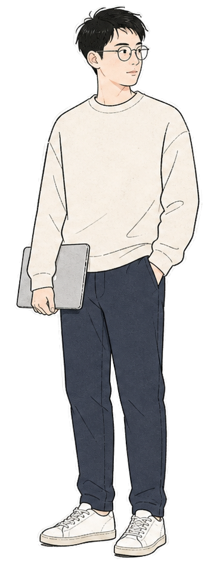

// current focus
- Asset Workbench
- Bond AI Agent
- PM Agent Skills
- Personal IP Systems
Python
TypeScript
Next.js
FastAPI
LangChain
PostgreSQL
> building useful things
> one commit at a time
>

我从债券、资管和交易工作流里做产品，也用 AI Agent 把复杂判断拆成可复用系统。
负责全资产资管平台客户端产品设计，覆盖投研、交易、风控链路； 构建多场景工作台，让用户在一个页面完成从簿记到风控测算的交易生命周期操作。
推进“AI+资管”中试基地 Agent 场景和产品经理 Agent 设计， 将业务探查、信息收集、数据依赖和产品判断拆成可复用流程。
负责债券经纪商行情筛选 Agent，让用户通过自然语言完成多维度债券筛选和过滤； 参与 Chat 后端与问财 AI 对接测试、竞品效果对比和评分标注。
设计债券信用分析、成交偏离监控、信用债曲线定价和自动化场外交易产品。 金融 Q 使用 NLP + LLM 标准化投资经理、交易员、做市商和 Broker 之间的指令流转， 将报价触发从约 1 分钟压缩到 1 秒，将成交单梳理从约 30 分钟缩短到 2 分钟。
M.S. in Finance, Asset Management track. GPA 3.95 / 4.0, Beta Gamma Sigma. Coursework covered derivatives, stochastic processes, risk management, fixed income, Python, and SQL.
把简历里的关键经历转译成可以被打开的产品房间。
Client-side workbench for research, trading, and risk workflows across the full asset-management lifecycle.
Natural-language bond screening and OTC trading automation using NLP + LLM workflows.
Multi-agent interactive fiction platform with Writer, Editor, Archiver, and Option Generator roles.
公开仓库是我的实验室：把产品方法、Agent 能力和个人 IP 系统沉淀成可复用资产。
PM 技能库与实战方法论沉淀，把需求分析、竞品学习和复盘做成结构化能力。
金融机构系统 PRD 插件，从信息收集、brainstorm 到挑刺与成文，服务决策质量。
A reusable workflow for turning photos or descriptions into personal IP systems.
McDonald's 点餐助手，支持 OpenClaw、Claude Code 等 agent 框架的小型实用技能。
后端学习路线与项目库，从基础到项目实践，记录系统学习的回路。
最近的重心是把“会做一次”的东西收敛成“可以复用很多次”的工作流。
把投研、交易和风控里的信息收集、业务探查、PRD 形成拆成 Agent 可执行步骤。
Digital Ethan system and content knowledge base to scale personal IP and product storytelling.
把需求分析、竞品研究、PRD 写作和 critique 做成可复用的 PM skill stack。
用 AI 编程工具完成 Novelty Studio 等产品原型，把产品设计和实现连接起来。
I'm open to collaborating on fintech products, AI agent workflows, personal IP systems, and product tools that turn messy judgment into repeatable systems.
github.com/EthanSMCLocationShanghai, China